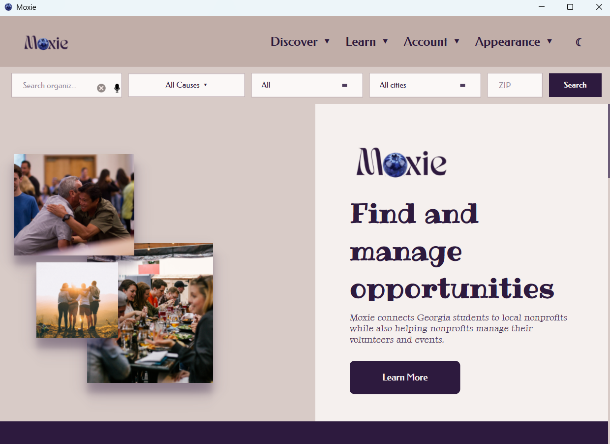

Moxie
PythonPyQT6DB BrowserSQLiteQSS
Connecting volunteers and organizations across Georgia


Moxie is a volunteering desktop application that connects volunteers with organizations across Georgia. AI recommendations help volunteers discover opportunities, serve, and track their progress, while organizations can manage volunteers, migrate rosters, and follow their impact. Submitted to the Congressional App Challenge 2026.